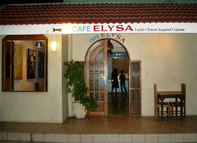

REGION VII : Central Visayas
Queen City of the South- Cebu
Top Things to do
- - Take a Glance of the Past - -
Since Cebu is one of the oldest city and first Spanish settlement in the Philippines,
it has a lot of historical attractions to offer to its visitors. The large sea port and air hub has also contributed
to modernize the city and the urban culture mix with the old heritage. Learn about the local culture and history with
a visit to ancestral houses, museums and preserved landmarks. This will surely give you a unique experience to be remembered.

Magellan Cross
Cebu
A symbol of Catholicism in the Philippines, the cross was planted in April 21.
1521 by Ferdinand Magellan. This marks the spot where the first Christian Filipinos, Rajah Humabon
and Queen Juana together with other 400 followers were baptized. It is a housed in a kiosk, built
to protect the cross from total destruction. Look skywards to admire the ceiling paintings depicting
the historical event.

Basilica Del Santo Nino
Basilica every Friday for the novena. Devotees, too, flock to the church for the Sinulog celebration every third week of January.
Say a little prayer at Basilica del Santo Nino, just few steps away from the Magellan’s Cross.
The Basilica del Santo Nino, which was built in 1565 by Miguel Lopez de Legazpi and Father Andres de Urdaneta,
houses the oldest and most celebrated Christian relic in the country –the image of Senor Santo Nino de Cebu.
Fort San Pedro
Cebu
Check out the smallest and oldest triangular in the country bastion in the country which was built in 1565
and completed over a century and a half later. This fort was built to primarily protect the Spanish settlers from the
attacking pirates in the area. It has also witnessed the different changes in the history of Cebu Island until much of
it was destroyed during the Japanese occupation when it served as a prison camp.
Colon Street
Cebu
Take a walk in the Colon Street which is considered as the oldest street in the Philippines. It was built by
the Spaniards during the time of Miguel Lopez de Legazpi. Named after Christopher Columbus, it is the heart of downtown Cebu,
throbs with people from all walks of life and despite being highly-urbanized; there are still remnants of its beauty from the
olden times. At present, it is lined up with shopping malls, restaurants and other business establishments.
Casa Gorordo
Cebu
Let’s take a tour and experience the Filipino lifestyle with Casa Gorordo
located in Lopez Jaena Street, it is the home of the first Filipino Bishop of Cebu –Juan Gorordo (1862-1934).
A tour inside this residence is a brief journey into a Filipino lifestyle in a particular period between the years
1860-1920. The place presently features noted paintings, museum relics, a courtyard, antique household items and furniture.
- - Go Extreme - -
Skyline Experience Adventure
If you are seeking for great adventure within the city go to the Crown Regency Hotel and Towers, it is a fairly
new hotel with tons of amenities, first class comfort and top notch service. The Skywalk Extreme as the name depicts, is a
walk on a glass based floor on the edge of the exterior of the 37th floor of the building. It is like walking on the sky but
with a harness attached to a cord. The view of the whole of Cebu City and neighboring island of Bohol are amazing from this level.
A pair of athletic shoes is required. There are rental of shoes just in case. Guests who will go on for this adventure will need to change into the required flight suits.
Edge Coaster
Get an adrenaline rush with the Edge Coaster. The Edge Coaster is a gliding coaster ride on a rail situated around the edge of the exterior of the 38th floor.
The coaster that is facing outward the building tilts to 30 to 55 degrees to its front.
It has the same spectacular view of Cebu City and Bohol Island like the Skywalk Extreme. This adventure is exciting and scary for some, but not as scary if it would have been
a real roller coaster. However, the ride gives you that feeling when you are about to fall off a building. That alone is a scary thought; imagine actually being there experiencing
that moment for 5 minutes. It is a must-try!
- - Go Diving - -
Cebu promises as one of the hotspots for scuba diving in the Philippines. It is a diver's paradise offering consistently warm blue water and abundant marine life.
The tropical waters in Cebu range from 27-29 degrees all year round. Underwater visibility varies, but most divers can generally expect 15-40 meters. The top 5 dive areas in Cebu
are ideal for both novice and experienced diversalike. Get your scuba diving adventure of a lifetime right here in Cebu! Some of the diving areas are Mactan, Moalboal, Malapascua Island,
Liloan Island and Sumilon Island
- - Go on a FoodTrip - -

Cafe Elysa
Cafe Elysa is very popular and a secret favourite restaurant for many people in Cebu. Chef owner, Steve Aznar, is a New Yorker who came home to roost.
His restaurant is part world cuisine and part comfort food.It is not very well located, but once you are inside, it is lovely and relaxing. Address:30-a Zamora Street Parian, Cebu City.
Canvas Bistro Bar
This Bistro Bar serves great western style food at affordable prices, the Australian owner and his Filipino wife are very friendly.
The menu has a variety of choices, ranging from sandwiches to Australian pub grub to creative salads and excellent entrées. Address:Ayala Center Cebu, Cebu City.